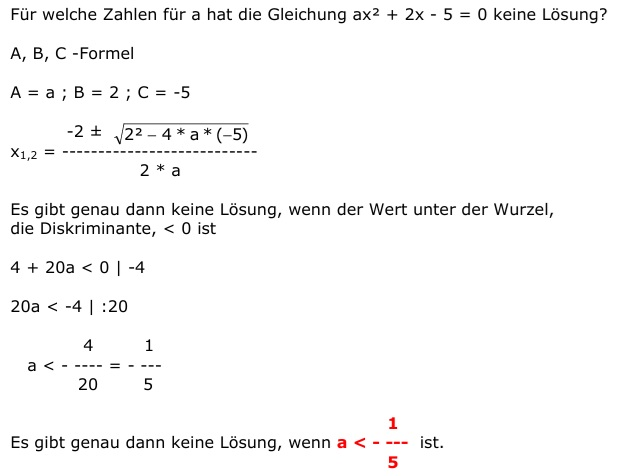

Aufgabe 81 Für welche Zahlen für a hat die Gleichung ax2 + 2x - 5 = 0 keine Lösung? A, B, C -Formel A = a ; B = 2 ; C = -5  Es gibt genau dann keine Lösung, wenn der Wert unter der Wurzel, die Diskriminante, < 0 ist 4 + 20a < 0 |-4 20a < -4 |:20 4 1 a < - ---- = - --- 20 5 Es gibt genau dann keine Lösung, wenn 1 a < - --- ist. 5